Estructura y soluiones de un radical
Estructura y soluciones de un radical
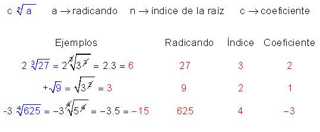
Soluciones segun sea el exponente y el signo del radicando
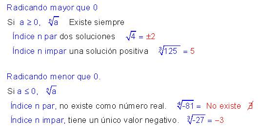
Relaciones entre radicales y potencias
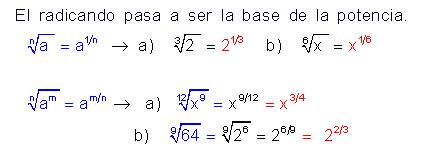
Ejemplos
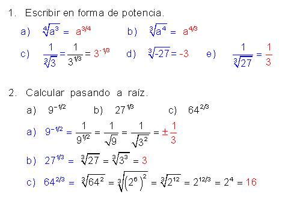
operaciones con radicales (producto de los radicales)
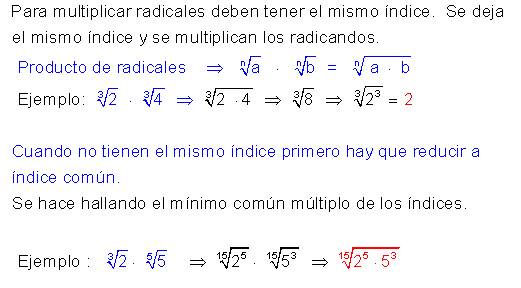
- Para pasar de indice 3 a indice 15 hemos multiplicado por 5, el radicando lo debemos elevar a 5
- para pasar de indice 5 a 15 hemos multiplicado por 3, el radicando lo debemos elevar a 3
- En este momento ya tenemos los radicales reducidos a indice comun, dejamos el mismo indice y multiplicamos los radicando
Cociente de radicales:
Para dividir radicales deben tener el mismo indice. Se deja el mismo indice y se dividen los radicandos
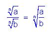
Ejemplos:
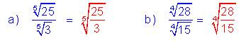
Si no tienen el mismo indice primero hay que reducira indice común
Se hace igual que en los productos de radicales
Ejemplos:
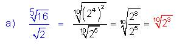
Otra forma de hacerlo es pasando a potencia
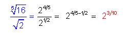
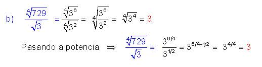
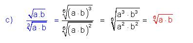
Suma de radicales Radicales semejantes
Para sumar radicales deben de ser semejantes, tener el mismo indice y el mismo radicando. Se suman los coeficientes y se deja el mismno radicando
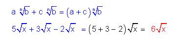
Radicales no semejantes
Cuando los radicales no son semejantes, para conseguir que lo sean hay que extraer factores fuera del radical
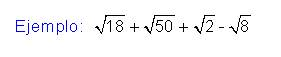
1º Descomponemos en factores
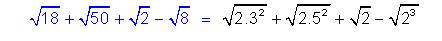
2º Extraemos factores
Para poder extraer factores de un radical deben tener el mismo exponente que el indice que la raiz y estar multiplicando o dividiendo dentro del radicando.
Si estan sumando no se pueden extraer
En este caso ya tenemos preparado 3^2 y el 5^2 para poderlos extraer

3º Ya son semejantes, Sumamos los coeficientes y dejamos el mismo indice y radicando
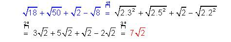
Raiz de raiz
Raiz de raiz cuando los radicales estan multiplicando.
a) Cuando no hay nada entre las raices que estan multiplicando. Se multiplican los indices y se deja el mismo radicando
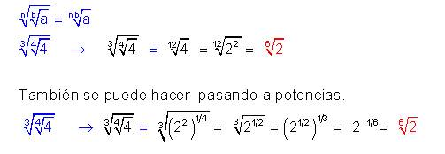
b) Cuando hay algo entre las dos raices hay que introducir factores en el radical.
Para introducir factores dentro de un radical, Se introduce el factor que sea elevado al mismo indice que tenga la raiz donde lo queremos introducir.
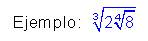
Queremos introducir el 2 que esta entre los dos radicales. El indice de la raiz es 4, el 2 lo debemos introducir elevado a la cuarta. Despues se multiplican los indices y se opera con el radicando.
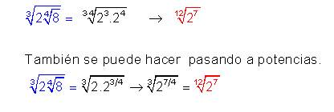
Raiz de raiz con los radicales sumando
Se hacen las raices, empezando por los mas interior y luego las siguientes
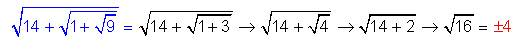